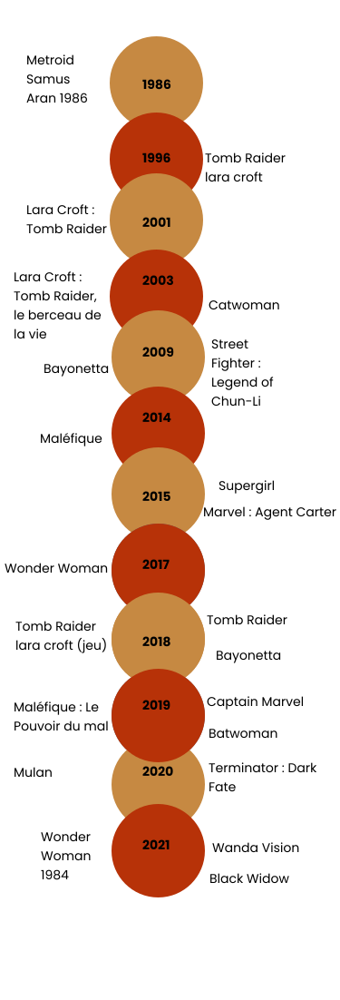

Vidéo
Autres Projets
Si vous notre Travail vous a plus nous vous conseillons celui de nos collègues nous vous en sommes reconnaissant de votre visite.
« Femme en mieux » traitant le féminisme dans l'art réaliser par SATURNI Loris
« Éducation et les Filles de ; contraire à complémentaire » traitant Le féminisme et l'éducation réaliser par MEN Ilkay
« Be witchy » traitant les Sorcières et féministes réaliser par SARKISSIAN David
« Feminiciné » traitant Le cinéma , les femmes et l'histoire a travers les âges réalser par ThéoPasquarelli s
« Le féminisme dans la politique & la littérature » traitant la Gloire des femmes réaliser par TRESSE Paul
Frise Chronologique
Metroid Samus Aran 1986
Tomb Raider lara croft
Lara Croft : Tomb Raider
Lara Croft : Tomb Raider, le berceau de la vie
Catwoman
Bayonetta
Street Fighter : Legend of Chun-Li
Maléfique
Supergirl
Marvel : Agent Carter
Wonder Woman
Tomb Raider
Tomb Raider lara croft (jeu)
Bayonetta
Maléfique : Le Pouvoir du mal
Captain Marvel
Batwoman
Mulan
Terminator : Dark Fate
Wonder Woman 1984
Wanda Vision
Black Widow
GLOSSAIRE :
Article 1 : Les femmes et les comics :
Culture : Le terme Pop Culture revient sur le devant de la scène. Tous les sites d’actualités dédiés au cinéma, aux jeux vidéo, à la culture geek, la culture web etc. se décrivent désormais comme des sites consacrés à la Culture Pop
Féminisme : Mouvement militant pour l'amélioration et l'extension du rôle et des droits des femmes dans la société.
Maisons d'édition : Une maison d’édition est une entreprise ou une association dont l’activité principale originelle est la production et la diffusion de livres ou de documents mis en page.
Archétypes : Modèle original ou idéal sur lequel est fait un ouvrage, une œuvre
L'humanité : Ensemble des caractères par lesquels un être vivant appartient à l'espèce humaine, ou se distingue des autres espèces animales
Précurseur : Personne qui, par son action, a plus ou moins préparé les voies à une doctrine, à un mouvement ou qui a devancé l'exposé d'une théorie.
Héritage : Ce qu'on tient de prédécesseurs, de générations antérieures, sur le plan du caractère, de l'idéologie, etc
Article 2 : Gal Gadot :
#MeToo : mouvement social encourageant la prise de parole des femmes, afin de faire savoir que le viol et les agressions sexuelles.
#SeeHer : Récompense accorder aux femmes aux Critics' Choice Movie Awards par le pour leurs actions féministes afin de changer les choses.
Associations : Groupement de personnes qui s'associent à une fin déterminée
Stéréotypes : Expression ou opinion toute faite, sans aucune originalité, cliché.
Article 3 : Oeuvre :
Facettes : Chacun des divers aspects présentés par quelqu'un, quelque chose
Porosité : État d’une frontière mal protégée, que l’on peut traverser illégalement en divers points de passage
Illustrations : Ensemble des gravures, des dessins, des reproductions, etc., documentaires ou artistiques, ajoutés au texte d'un ouvrage
Universellement : De façon universelle, par tout le monde